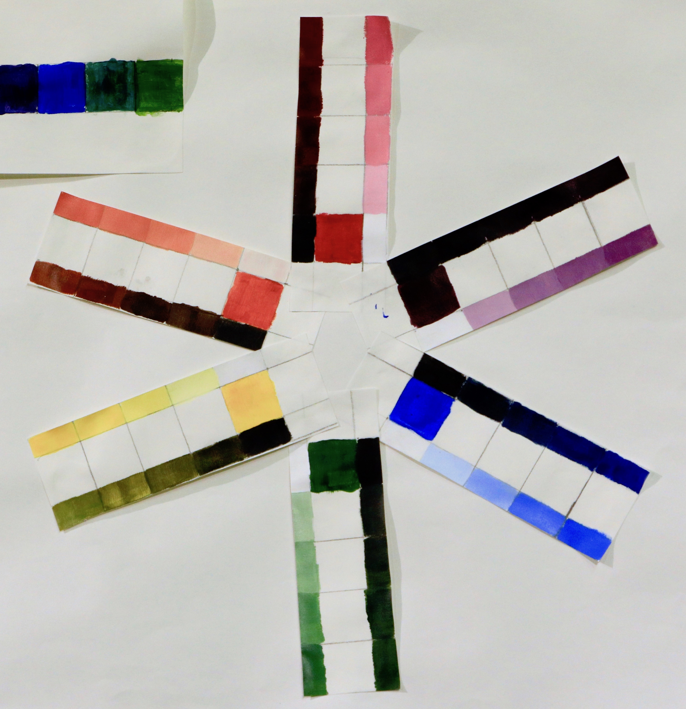
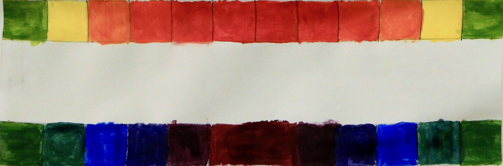
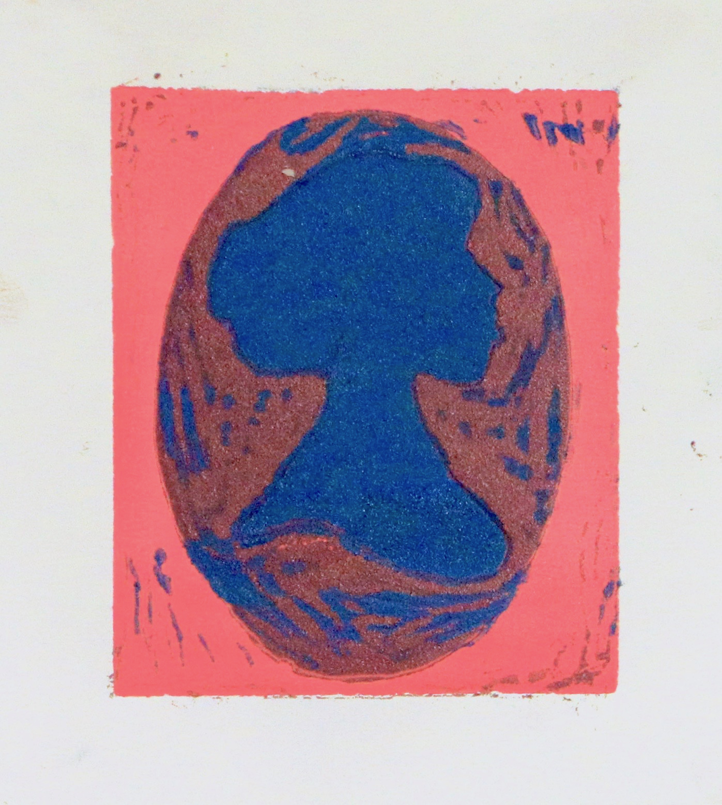
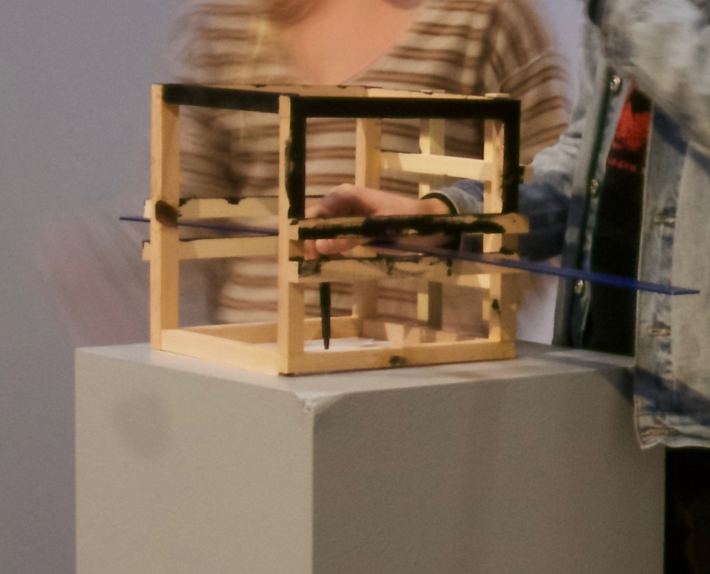
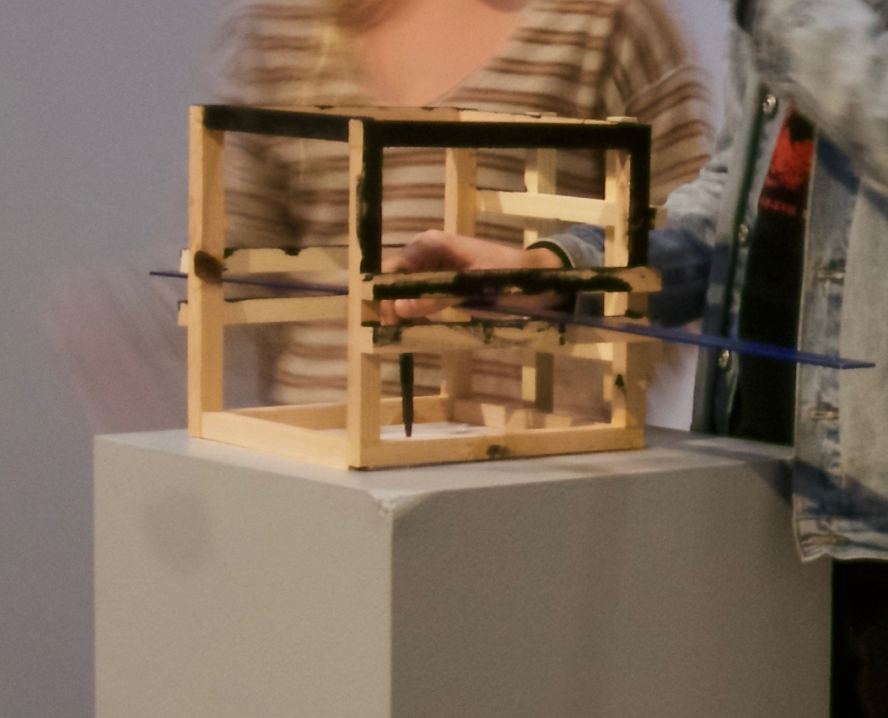

FALL SEMESTER
Primary and Secondary Color Scale
 
While creating the “Primary and Secondary Color Scales,”I had also created two separate color scales, exploiting each of primary and secondary colors. Using acrylic paint and starting with the primary colors I mixed each of the three with one another and constructed the secondary colors. My second scale analyzed the hues of these colors. Using a variety or grays, I found different temperatures within each color. Lastly, My color wheel displays the primary and secondary colors and a variety in their intensity.
Tint, Tone, & Shade Color Scale

Monochromatic Color Scheme (still life painting)
“Blossom,” my still life painting was painted from the perspective of a blossoming flower in a vase. There were two different sources of back/left side light which created value and definition thought my piece. Using only the hue of red, I was able to create the space of illusion and emotion through expression. The dominant color red, when mixed portray different values, creates many pink tones along with rusty purple. This colors typically represent love and affection was flowers express these emotions.
Complimentary Color Scheme (leaf painting)
“Drift,” my Leaf painting was inspired by the autumn leaves and unique colors and diversities they offer. I loved working with the light primaries and their additive mixtures. The blue background contradicts the warmer colors in the leaves while showing unity with green tones.
Color Linoleum Block Print
These prints were made based off the idea of a locket and the female figure. The oval-shape symbolizes the the shape of the necklace, the color scheme is very feminine, along with a female figure. This technique of art and the concept behind it really ties together. Lockets signify the olden day woman and reflect a bit of the woman in that time.
Other Works


 
